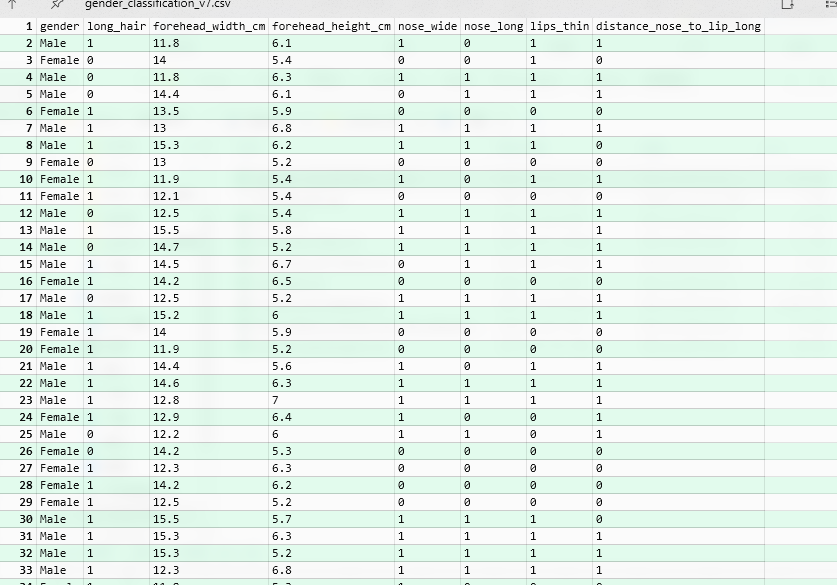
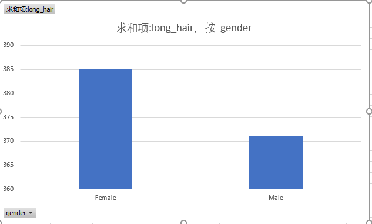
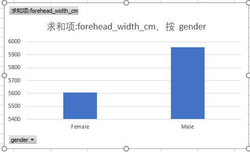
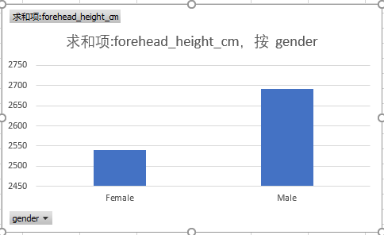
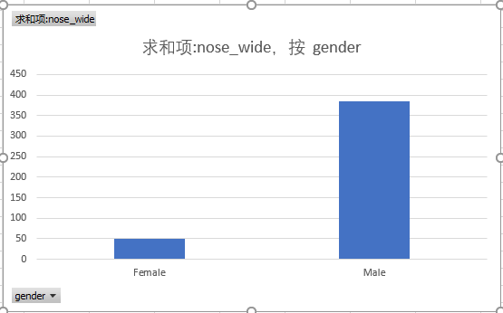
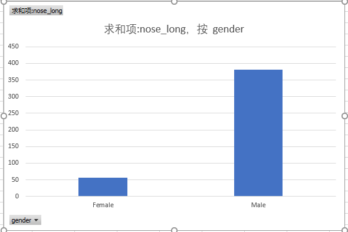
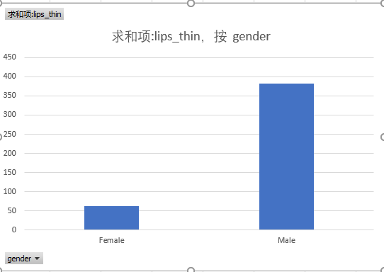
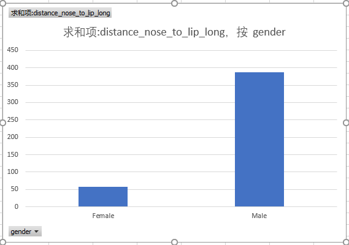

Lab 66
性别分类数据集
潘子文 二資陸生二 108AEA004
訓練資料集的部分
資料來源於Kaggle
Gender Classification Dataset
Dataset to try machine learning classification tasks
資料特征
1.gender:“男”或“女”。
2.longhair:此列包含 0 和 1，其中 1 是“長頭髮”，0 是“不長頭髮”。
3.foreheadwidthcm:此列在 CM 中。這是額頭的寬度。
4.foreheadheightcm:這是額頭的高度，以厘米為單位。
5.nosewide:此列包含 0 和 1，其中 1 是“寬鼻子”，0 是“不寬鼻子”。
6.noselong:此列包含 0 和 1，其中 1 是“長鼻子”，0 是“不長鼻子”。
7.lipsthin:此列包含 0 和 1，其中 1 代表“薄嘴唇”，而 0 代表“不是薄嘴唇”。
8.distancenosetoliplong:此列包含 0 和 1，其中 1 表示“鼻子和嘴唇之間的長距離”，而 0 表示“鼻子和嘴唇之間的短距離”。
訓練說明
使用 Python 平台，以 sklearn 機器學習套件。
透過上述的資料，使用決策樹進行訓練，訓練集與測試集比例為8:2。
測試資料集的部分
實驗結果
在本次训练中的效果很好，訓練資料集的成果上，取得了100%的成績。
在测试资料集也取得了91.7%的成果
由於樣本太少的關係出現了 overfitting（過擬合）的問題。
成果圖

數據集訊息

由圖可知，長髮的多爲女性

由圖可知，前額寬的多爲男性

由圖可知，前額長的多爲男性

由圖可知，鼻子寬的多爲男性

由圖可知，鼻子長的多爲男性

由圖可知，嘴唇薄的多爲男性

由圖可知，鼻子和嘴唇之間的距離長的多爲男性
實驗結論
1.長頭髮的大多為女性
2.男性的五官特徵多寬大立體
3.女性的五官特徵多精緻俊俏